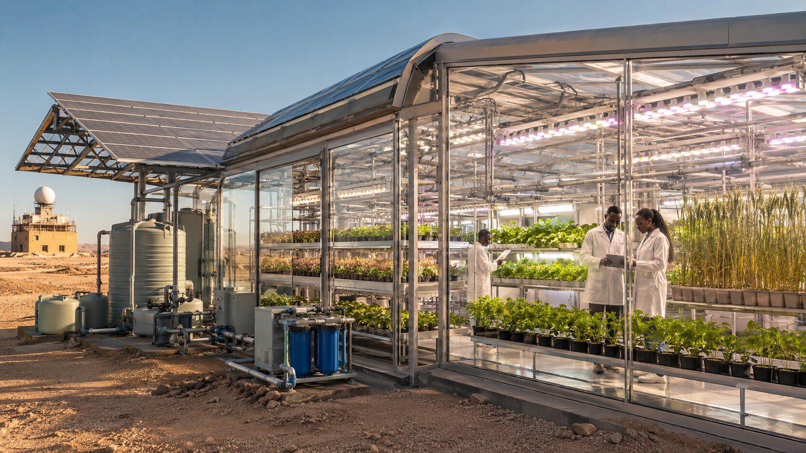
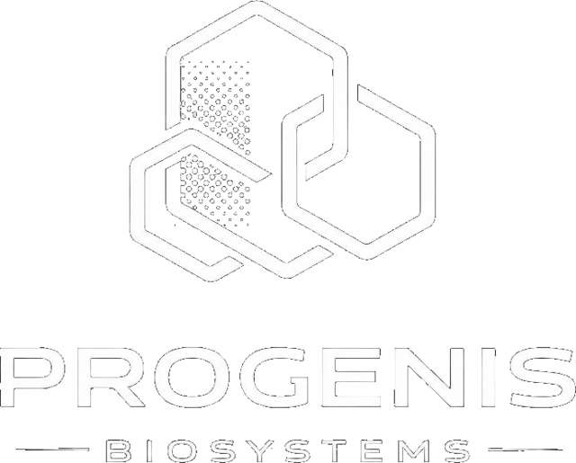

Société Anonyme enregistrée à Bamako, AISC Space Exploration Technologies structure une filière spatiale intégrée : infrastructures de lancement, ingénierie, énergie et recherche.
AISC Space Exploration Technologies SA est une entreprise enregistrée au Mali, engagée dans le développement de l'industrie spatiale africaine. Son ambition est de renforcer le segment upstream de la chaîne de valeur spatiale à travers le déploiement progressif d'un spatioport au Mali, destiné à favoriser l'émergence de capacités africaines de lancement et d'accès à l'espace.
AISC propose également des prestations de conseil dans le domaine midstream, ainsi que des services d'ingénierie, de conception de missions et de systèmes spatiaux. À travers ses activités, la société entend contribuer à l'ouverture de l'Afrique à la nouvelle économie spatiale et à la structuration d'un écosystème technologique, industriel et scientifique durable.
Immatriculée au Registre du Commerce et du Crédit Mobilier de Bamako sous le n° MA.BKO.2022.B.04973, le 24/05/2022.
ACI, Rue 638, Commune V, Baco Djicoroni, Bamako — District de Bamako, Mali.
Construction d'aéronefs et d'engins spatiaux, ingénierie, énergie solaire et recherche appliquée au secteur spatial.
Conformément à son objet social, AISC couvre l'ensemble de la chaîne de valeur aérospatiale, de la conception à l'exploitation.
AISC travaille au déploiement de centrales d'énergie solaire permettant d'alimenter durablement ses futures infrastructures spatiales. Ce programme comprend l'étude d'une unité de fabrication de panneaux photovoltaïques ainsi que des parcs solaires destinés aussi bien aux sites industriels qu'aux communautés locales des régions concernées.
En parallèle, AISC souhaite offrir un environnement de recherche proche des conditions réelles pour l'étude de la botanique et de l'agriculture en contexte spatial — une brique essentielle pour l'autonomie des futures missions et l'écosystème scientifique du continent.

Nos équipes de recherche étudient la croissance et la résilience des végétaux dans des conditions contrôlées, en s'appuyant sur les technologies de culture hors-sol et d'éclairage utilisées pour préparer les futures missions spatiales.
Cette démarche progressive — du laboratoire à l'analogue terrestre, puis vers des conditions toujours plus proches de l'espace — vise à faire émerger une expertise africaine reconnue en agriculture spatiale, au service de la sécurité alimentaire des futures missions.
AISC s'appuie sur un réseau de partenaires spécialisés pour accélérer ses programmes de recherche et son développement technologique.

Collaboration en recherche et développement autour de la micropropagation et du clonage génétique appliqués à la botanique spatiale.
Fintech spécialisée dans les solutions bancaires, accompagnant AISC dans le développement de technologies financières adaptées au secteur spatial.
Construire des capacités africaines autonomes d'accès à l'espace.
Concevoir des solutions d'ingénierie adaptées aux réalités du continent.
Allier énergie solaire, recherche et industrie dans une logique responsable.
Garantir la sûreté et la fiabilité de chaque projet mené par AISC.